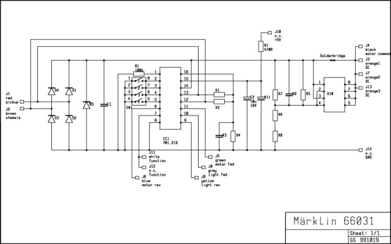
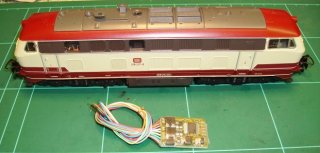
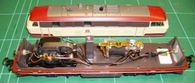
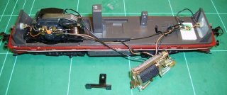
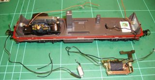
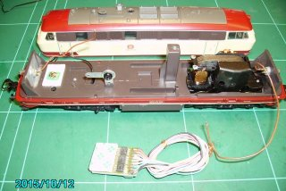
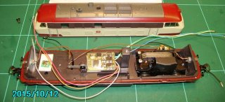
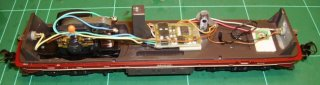
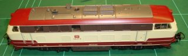
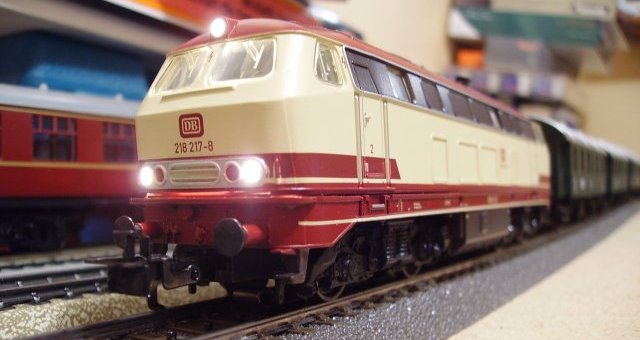

NAVIGATION
TOP of Page
MAIN Page
HOME Page
DECODER
Information
Specifications
Installation
Programming
|
Digital Decoders in Marklin Locomotives
The original Marklin models used a reversing relay to change the direction of travel on their AC three rail
models. This project details the conversion of a Marklin Hobby model 30747 German class 218 Diesel-Hydraulic
locomotive to digital operation. This requires removal of the reversing relay and wiring a digital decoder
in its stead. The decoder is an eBay purchase of a model RTL1000 from mr_atomo in Argentina.
So far I have bought 16 packets, each containing four decoders, from this supplier and have found him to be a
helpful supplier communicating in English. The cost per packet of four decoders is $70.00US plus postage at $22US,
with current exchange rates approximately $130AUS. Each single decoder thus ends up at just under $33AUS. You
can save money on postage by ordering multiple packets. One thing to note: postage from Argentina at reasonable
rates takes about four weeks for delivery, however I am happy with that.
TOP
MAIN
HOME
Specifications of the Digital Decoders
Packet with 4 units of Decoders for Marklin Locomotives
Compatible with AC motors like LFCM and SFCM (Marklin 3000,3003,3021,3034,3064,3078,etc)
4 High Current Output Functions
Can drive 1.5A motors and 1A total for functions
Automatically Selects AC or Digital Mode
Can be programmed with Control Unit, Mobile station I and II or Central Station I and II
Decodes Delta and Marklin FX (MM2) protocols
Dimensions - Length:25mm, Width:18mm, Thickness:5mm.
 The Decoder connections and cable colours are similar to a Marklin Delta decoder.
|
Colour:
|
Function
|
Colour:
|
Function
|
|
RED:
|
Pickup Shoe
|
BROWN:
|
Chassis (Earth)
|
|
PURPLE:
|
Function #1 (N/A)
|
WHITE:
|
Function #2 (N/A)
|
|
GREY:
|
Headlight - Front
|
YELLOW:
|
Headlight - Rear
|
|
GREEN:
|
Motor - Field Coil Fwd
|
BLUE:
|
Motor - Field Coil Rev
|
|
ORANGE:
|
Function Common (N/A)
|
BLACK:
|
Motor - Common
|
TOP
MAIN
HOME
Installation of the Decoder
Requirements
Locomotive: Any Marklin model locomotive running an AC reversing relay
Decoder: Marklin compatible four function decoder as noted above
Adhesive: Double Sided Foam Tape (available at Woolworths)
|

|
The model as supplied:
This is a Marklin 'Hobby' 30747 model of the DB Class 218 Diesel Hydraulic Locomotive.
As supplied under AC control, the headlights do not change with the direction of travel.
In the foreground is the model RTL1000 decoder to be fitted to the locomotive.
|
|

|
Removing the body to see the chassis:
After undoing a small screw on the top of the body, you can remove the body and see the
components mounted on the chassis. The motor is on the left and the Reversing Relay is
to the right of centre.
|
|

|
Removing the Reversing Relay:
Unscrew and remove the horizontal mounting screw to detach the Reversing Relay from its
mounting pillar and gently slide the relay out. A plastic insulating foot may also be
removed if included.
|
TOP
MAIN
HOME
|

|
Removing the present wiring and creating a Common Earth point:
Gently unsolder all the attached leads except the longest lead on each of the two headlamps
and the lead from the pickup shoe that protrudes through the chassis. Remove the Reversing
Relay, its mounting screw and the Choke (coil on end of lead in foreground) and save for
possible future use. File the surface of the Reversing Relay Mounting Pedestal to provide a
clean electrical contact. Drill and Tap a 3mm hole in the pillar with a drill and tap set.
Mount a solder lug and spring washer on the pedestal with a 3mm screw. This becomes the
Common Earth point. This is visible in the next photo.
|
|

|
Trimming the leads and mounting the Decoder:
Cut the excess leads as close as possible to the shrink wrap around the motor. On a diesel I cut the Purple
and White 'Function' leads and the Orange 'Function Common' lead. On a Steam Loco you may also cut the Yellow
'Headlight Rear' lead if there is no rear headlight. Examine the upper surface of the chassis to find a flat
area that will take to double sided tape. You may need to align the Decoder in a way that best utilises the
available mounting space and the dispersal of the leads. Apply two layers of the tape with the non stick liner
removed to the flat area on the bottom of the Decoder. You may require Super Glue to get effective adhesion.
|
TOP
MAIN
HOME
|

|
Test run of the lead alignment and wiring the Common Earth:
Do a test layout of the lead placement to ascertain lead lengths and routing possibilities. Cut the leads with
approx 1 to 2cm to spare in length, Remove the last 2mm of insulation from the leads and twist then tin them in
preparation for soldering. Join the two long headlight leads with the Brown chassis lead and solder it to the
Common Earth solder lug. There is no need to remove the interference reducing capacitor from the motor.
|
|

|
Final Wiring of the Locomotive:
Solder the Red lead to the Pickup Shoe lead on the solder land provided. Attach the Black, Green and Blue
(nearest the commutator) leads to the motor. If the headlights and direction clash, swap the Blue and Green
leads. Attach the Grey and Yellow leads to the appropriate headlights.
|
|

|
Reassembly of the Locomotive:
Check no leads are out of place and replace the body. This decoder is set up for providing headlight changeover
in the direction of travel. The headlights are switched off/on by Function #0. Swiss locos may require a diode
matrix to achieve realistic results with their unique directional lamp systems.
|
TOP
MAIN
HOME
Programming the Locomotive using the Mobile Station
01. Press [STOP]. This is indicated by 'STOP' appearing on the top of the display and cutting the track power.
02. Place the locomotive on the track.
03. Press [ESC] to bring up the Menus.
04. Dial in 'NEW LOC' and press [OK].
05. Dial in 'DATABASE' and press [OK].
06. Dial in 'M 36330' and press [OK]. The display will show 'EE 3/3' - a small Swiss electric shunter.
07. Press [STOP]. This is indicated by 'STOP' disappearing from the top of the display. The track power is now on.
08. Press [ESC] to bring up the Menus.
09. Dial in 'EDIT LOC' and press [OK].
10. Dial in 'ADDRESS' and press [OK].
12. Dial in 'A 18' as it is the nearest number for a class 218 loco. You could also use 'A 72' for the Delta Diesel number.
13. Display will show 'PROG LOC?' then press [OK].
14. The headlights will alternatively flicker for a couple of seconds and the display will return to the normal running mode.
TOP
MAIN
HOME
The loco will hum slightly at low speeds - that is normal. The headlights will change over with direction and can be turned off/on
with the F0 Headlight button. When you next turn the Mobile Station on, the Marklin 36330 EE 3/3 remains with the incorrect address.
If required it can be corrected back to the correct address 33 with the above process. I usually operate the converted locos via
their 'ADDRESS' selection, or try and discover the 'DATABASE' number of the modern digital equivalent locomotive.

The Digital Locomotive on my test track with headlights lit
whilst the loco is stationary - only possible with digital
TOP
MAIN
HOME
|